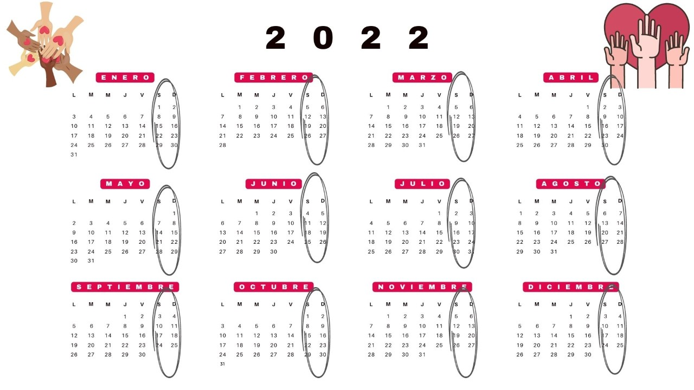

Introducción
Green Global Action quiere contribuir al desarrollo sostenible de ciudades y para ello se necesita a los propios ciudadanos, necesitamos vuestra colaboración y apoyo. Esta ONG ofrece varios tipos de voluntariados tanto para menores como para mayores de edad. De esta manera el propio ciudadano se haría cargo de sus responsabilidades sobre el impacto ambiental.
Objetivos:
Promover la participación ciudadana y la conservación de los espacios más valiosos de ciudades como Cartagena.
Sensibilizar a la población para que se orienten y aprendan cuales son sus prioridades y las del medio en el que viven.
Promover la implicación social para las tareas del entorno, fomentando el compromiso personal.
Relacionarse con la gente realizando una actividad de interés común.
Relacionar el patrimonio cultural e histórico con el ambiental, ya que están muy vinculados.
Orientar a personas de cualquier edad interesadas en el mundo del voluntariado a través de iniciativas medioambientales.
Fechas y horarios:
Las actividades tienen lugar durante los sábados y domingos de todo el año, excepto los festivos. Dependiendo del mes que sea se harán un tipo de voluntariados u otros.
Tipos de voluntariados:
Sensibilización a bordo: Los voluntarios recorrerán las costas mediterráneas para hacer sensibilización ambiental. Cada fin de semana se tratará un tema diferente, como por ejemplo la conservación de las fuentes de energía renovables o la invasión de plásticos.
Conservación de aves marinas: Se recoge información que proviene de las interacciones entre el ser humano y las aves marinas buceadoras.
Limpieza de playas: Los plásticos y residuos contaminantes serán recogidos al mismo tiempo que se produce la sensibilización ambiental.
Conservación de algunas especies: Se estudian todo tipo de especies para prevenir sus posibles amenazas y hacer un seguimiento de su evolución.
Campamentos: Esta actividad es más para los jóvenes, para aquellos que también quieran participar y ayudar a esta causa. Aquí se les enseña a cuidar, conocer y disfrutar de la naturaleza.
Perfil del voluntario: Todo aquel que tenga ganas de participar y ayudar será bienvenido. No hacen falta conocimientos previos.
Datos interesantes: Todos los que participen recibirán un diploma y un certificado. También se convalidan algunos Créditos por Actividades de Solidaridad y Voluntariado.

Apúntate